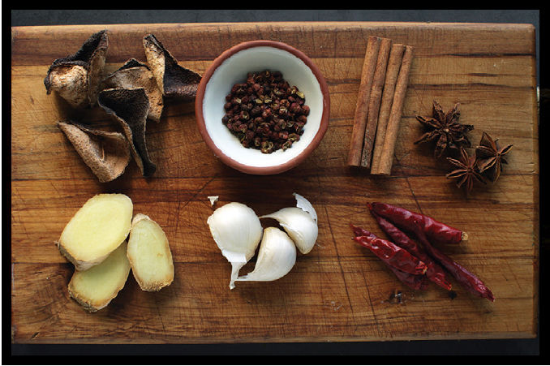
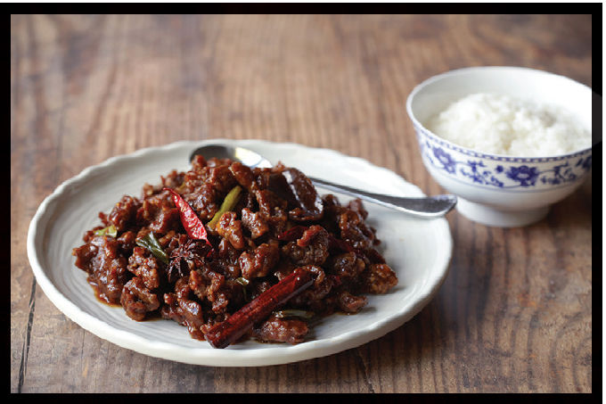

|
Yield Serves 4 to 6 |
Active Time 45 minutes Total Time 1 hour and 15 minutes or up to several days |
Chen pi is dried mandarin peel. You can order it from online retailers or from better-stocked Chinese supermarkets or Chinese herbal medicine shops. If you cannot find it, you can use four strips of mandarin, tangerine, or satsuma peel removed from a fresh fruit. If using fresh peel, omit the soaking process in step 3. In step 5, add the fresh peels along with 1 cup of water in place of the chen pi and their soaking water.
DIRECTIONS
1 For the Marinade and Beef: Beat the egg white in a large bowl until broken down and lightly foamy. Add the soy sauce, wine, and vodka and whisk to combine. Set aside half of the marinade in a small bowl. Add the baking soda and cornstarch to the large bowl and whisk to combine. Add the beef to the large bowl and turn it with your fingers to coat thoroughly. Set aside while you prepare the remaining ingredients or marinate in the refrigerator up to overnight before continuing.
2 For the Dry Coating: Combine the flour, cornstarch, baking powder, and salt in a large bowl. Whisk until homogenous. Add the reserved marinade and whisk until the mixture has coarse, mealy clumps. Set aside.
3 For the Sauce: Combine the soy sauces and cornstarch in a small bowl and mix with a fork until no lumps remain. Set aside.
4 Heat the oil and Sichuan peppercorns in a large saucepan or skillet over medium heat until fragrant, about 1 minute. Remove the Sichuan peppercorns with a slotted spoon and discard. Add the garlic and ginger and return to medium heat. Cook, stirring, until aromatic and soft, but not browned, about 2 minutes. Add the chiles, star anise, and cinnamon and cook, stirring frequently, until a toasty aroma hits your nose, about 30 seconds.
5 Add the sugar, vinegar, sesame oil, chen pi, and chicken stock. Bring to a bare simmer and cook for 10 minutes. Stir the soy sauce/starch mixture and add it to the sauce. Continue to cook, stirring, until the sauce boils and thickens to the point where it can easily coat the back of a spoon, about 1 minute. Add the scallions. Season the sauce with salt to taste and remove from the heat.
6 To Finish: Heat the oil in a wok over high heat until it registers 350°F (175°C) on an instant-read thermometer, then adjust the heat to maintain the temperature. Working one piece at a time, transfer the beef from the marinade to the dry coating mixture, tossing after each additions to coat the beef. When all the beef has been added to the dry coating, toss it with your hands, pressing the dry mixture onto the beef so it adheres and making sure that every piece is coated thoroughly.
7 Lift the beef one piece at a time, shake off excess coating, and carefully lower it into the hot oil (do not drop it). Once all the beef has been added, cook, agitating with long chopsticks or a metal spider and adjusting the heat to maintain a temperature of 325° to 350°F (160 to 175°C), until the beef is cooked through and very crispy, about 4 minutes. Remove the beef with a spider and transfer to a paper-towel-lined bowl to drain.
8 Optional Double-Fry, for Extra-Crispy Results: Let the beef cool completely on the countertop, or let it rest uncovered in the fridge for up to two nights. Meanwhile, strain the oil and discard any solids. Reheat the oil to 375°F (190°C), add the rested beef, and refry until crispy, about 2 minutes. Remove the beef with a spider and transfer to a paper-towel-lined bowl to drain.
9 Add the beef to the skillet with the sauce. Toss the beef, folding it with a rubber spatula until all pieces are thoroughly coated. Serve immediately with rice.

